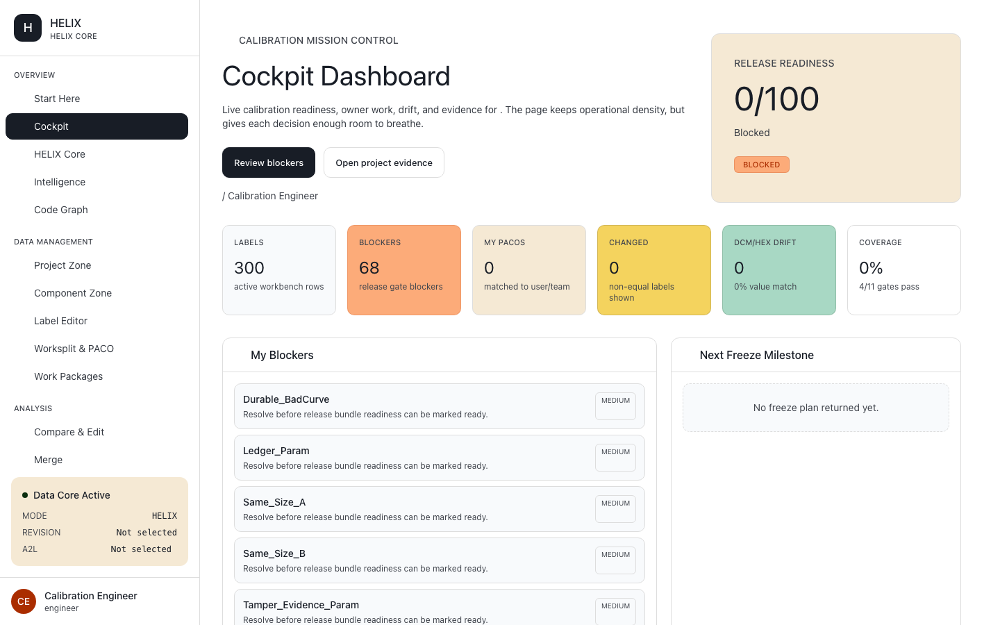
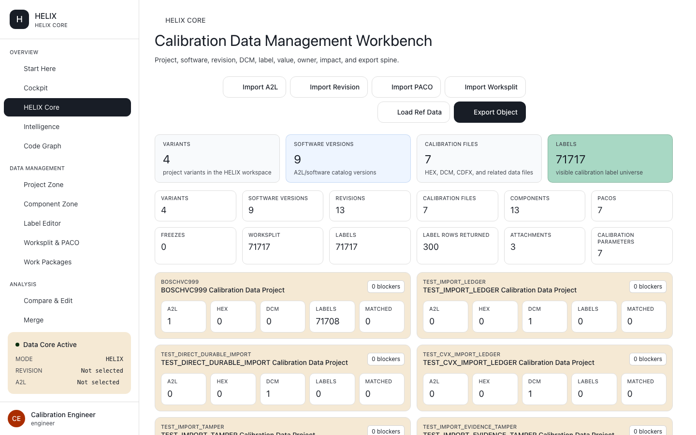
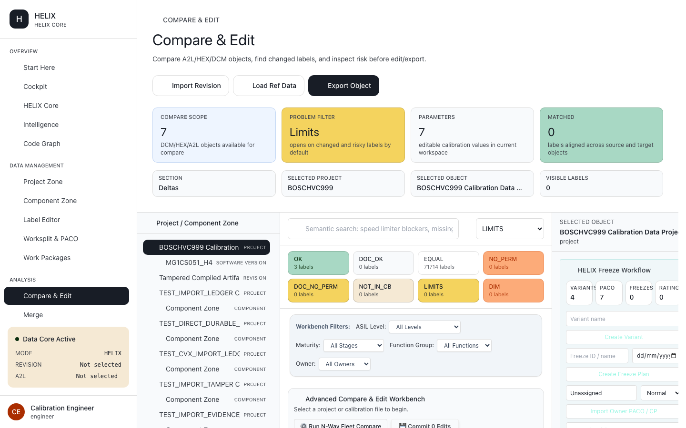
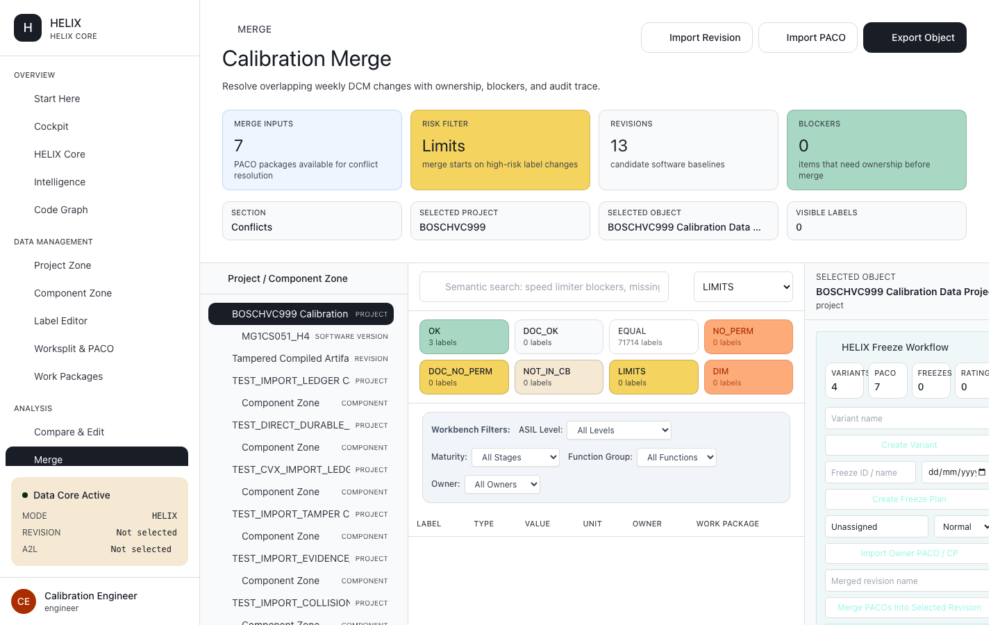
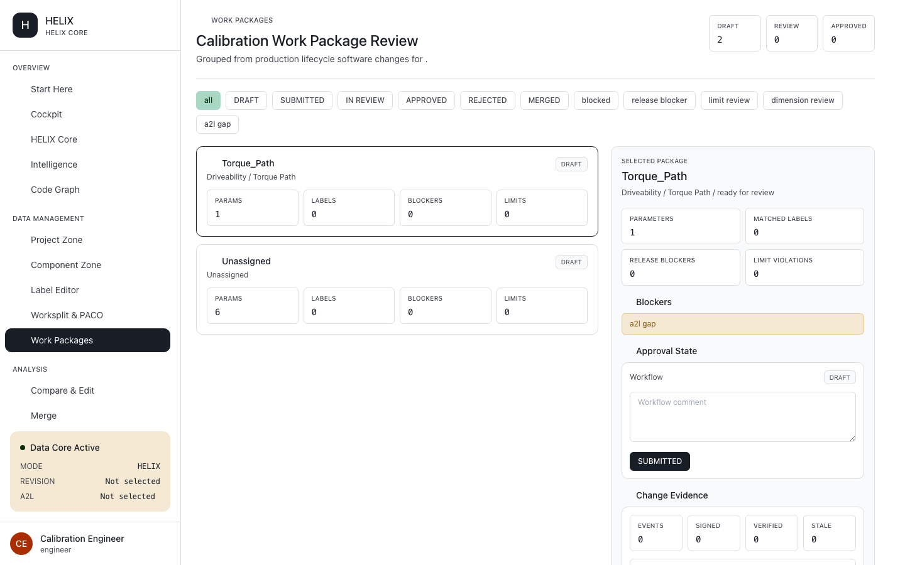
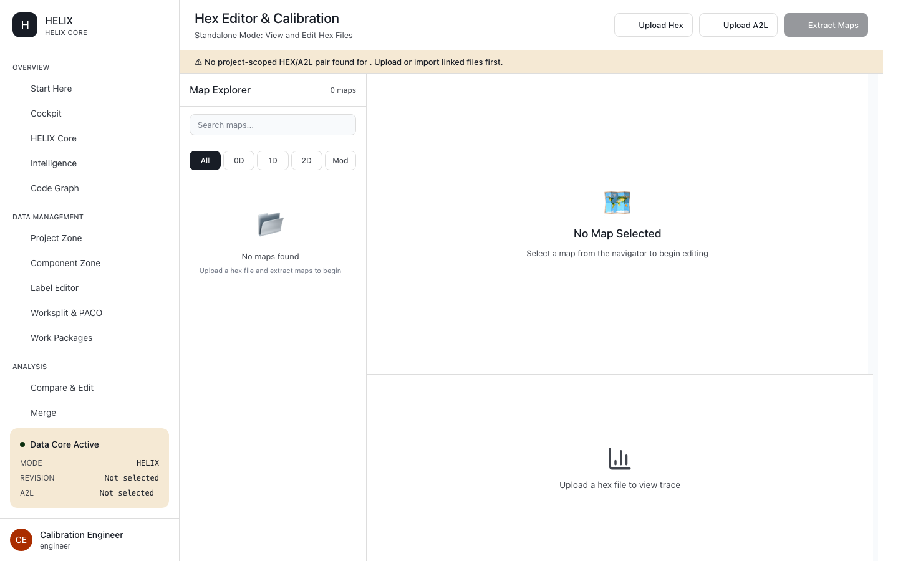

HELIX: ECU calibration
data management.
Upload the ECU description and base dataset, import multiple DCM/CDFX/PACO change batches, compare and merge variants, run validation gates, and generate the final ECU-ready calibration release file.
Why Helix
Calibration releases break when dataset changes are scattered across files and teams.
Patch batches arrive from everywhere
Each engineer or supplier sends calibration deltas as separate DCM, CDFX, or PACO packages. HELIX turns them into one controlled release candidate.
Manual merge is risky
Maps, curves, scalars, and axes need shape-aware comparison. HELIX surfaces conflicts before one patch silently overwrites another.
Final files need evidence
A release is not just a binary. HELIX keeps the link between source A2L, base dataset, approved changes, validation result, and final ECU artifact.
How it works
From ECU description to final release file
HELIX controls the calibration data-management path. MDX handles data viewing. XHandbook handles ECU documentation. HELIX governs the dataset.
Describe
Upload the A2L / ASAP2 file so HELIX knows ECU symbols, maps, curves, scalars, axes, units, and memory layout.
Baseline
Attach the base ECU dataset: HEX, S19, or SREC. HELIX maps calibration values back to the A2L-defined memory regions.
Patch
Import multiple DCM, CDFX, or PACO change packages from calibration work packages and suppliers.
Review
Compare variants, surface conflicts, approve changes, and preserve audit evidence before a release is frozen.
Generate
Compile the approved calibration state into the final ECU-ready HEX/S19 release artifact with validation status attached.
A2L plus base ECU dataset, mapped together
HELIX starts by pairing the ECU description with the actual calibration binary. That pairing is the foundation for every patch, comparison, validation, and release decision that follows.
-
description
A2L / ASAP2 symbol model
Resolve characteristics, measurements, axis points, record layouts, limits, units, and memory addresses before anyone edits a value.
-
memory
Base HEX/S19/SREC memory image
Load the baseline ECU dataset and keep memory-region handling explicit, so out-of-range extraction and malformed records fail loudly.
-
table_view
Calibration map extraction
Expose maps, curves, and scalar values as governed calibration objects instead of loose spreadsheet rows.
Multiple calibration changes, one controlled truth
HELIX is where scattered calibration deltas become a governed release candidate. It compares change batches against the base dataset and against each other before they can become the final ECU file.
-
upload
Batch import
Bring in DCM, CDFX, and PACO packages from multiple engineers, work packages, suppliers, or vehicle variants.
-
compare_arrows
Delta comparison
See exactly which maps, curves, scalar values, axes, and address-backed bytes changed across each patch batch.
-
rule
Conflict routing
Shape-aware conflicts are sent to review instead of silently overwriting another engineer's calibration work.
Release control
Freeze the reviewed calibration state
HELIX should never imply a release is ready when the base dataset, calibration package set, validation evidence, or compiled artifact is missing.
Work package freeze
Approved deltas are locked for release review.
Validation evidence
Rules and readiness checks travel with the release.
Compiled artifact
Generate the final HEX/S19/SREC release output.
Audit trail
Who changed what, when, why, and from which package.
Fail loudly before the wrong ECU file ships
HELIX is a governance surface. It should make missing base binaries, malformed patches, shape mismatches, unresolved conflicts, and failed release checks visible before the final file is generated.
-
rule
Range and rule checks
Validate patched values against limits, rule packs, project policy, and known calibration constraints.
-
schema
Shape-aware merge safety
Maps, curves, and scalars are checked as calibration structures, not treated as anonymous text edits.
-
report
Explicit blocked states
If a base HEX/S19, compiled artifact, or required patch package is missing, the page should say so instead of showing false success.
Inside HELIX
The calibration data workbench, end to end
From release readiness to compare, merge, and governed work-package review — real screens from HELIX.
touch_app Auto-scrolling — hover or tap any screen to pause & inspect

Release readiness, blockers, and change evidence.

Variants, software versions, and calibration files.

Shape-aware diff of maps, curves, and limits.

Reconcile overlapping DCM changes with audit trail.

Draft → review → approved with release blockers.

Upload HEX/A2L and extract calibration maps.
Local-first & verifiable
Your calibration data stays on your bench
Runs next to the data
Calibration files can be managed close to the engineering data, with no need to expose release work to unrelated tooling.
Interoperable, not lock-in
HELIX works with the ECU description, base dataset, and patch formats teams already exchange. Keep your existing upstream and downstream tools.
Reproducible records
Each release candidate carries structured evidence: source files, patch sources, merge decisions, validation status, and generated artifact.
A2L in one folder + base HEX in another + DCM patches over email + manual variant comparison + uncertain release status.
Many files. Weak traceability.
One governed calibration data-management path from A2L and base HEX/S19 to approved DCM/CDFX/PACO patches, release checks, and final ECU artifact.
One release truth. No silent overwrite.
FAQ
Common questions
Does HELIX replace MDX or XHandbook?expand_more
No. MDX is for vehicle and ECU data viewing, including oscilloscope-style analysis. XHandbook is for ECU documentation. HELIX is for ECU calibration data management, patch governance, validation, and final release generation.
What files does HELIX manage?expand_more
HELIX manages ECU description and calibration dataset files such as A2L / ASAP2, base HEX/S19/SREC, and calibration change packages such as DCM, CDFX, and PACO.
Is HELIX the vehicle-data viewer?expand_more
No. Vehicle or ECU data viewing belongs on the MDX page. HELIX should talk about calibration datasets, variant changes, validation, and final ECU file generation.
Does HELIX generate the final ECU file?expand_more
Yes. After changes are imported, reviewed, merged, and validated, HELIX is positioned to generate the final ECU-ready release artifact such as HEX or S19.
Where does my calibration data go?expand_more
HELIX keeps calibration release evidence close to the source files: A2L, base dataset, patch package, reviewer decision, validation status, and generated artifact.
Will I have to convert my files?expand_more
No. HELIX works with the calibration formats teams already exchange — A2L / ASAP2, base HEX/S19/SREC, and DCM, CDFX, and PACO change packages. Adoption is additive, not a migration.
What is the main value of HELIX?expand_more
HELIX prevents silent overwrite and weak traceability across calibration patch batches. It makes release readiness explicit — linking source A2L, base dataset, approved changes, and validation — before the final ECU artifact is generated.
See your calibration release
controlled in HELIX.
Book a technical demo and walk through A2L upload, base dataset handling, DCM/CDFX/PACO patch review, validation, and final ECU artifact generation.